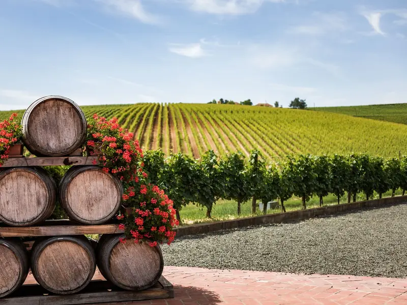

Hiszpańskie wina: Rioja, Ribera del Duero i cava — krótki przewodnik
Hiszpania należy do największych producentów wina na świecie, a jej regiony winiarskie różnią się klimatem i stylem. Wyjaśniamy, co oznaczają nazwy na etykietach i które wina zamówić do tapas.
Czytaj dalej: Hiszpańskie wina